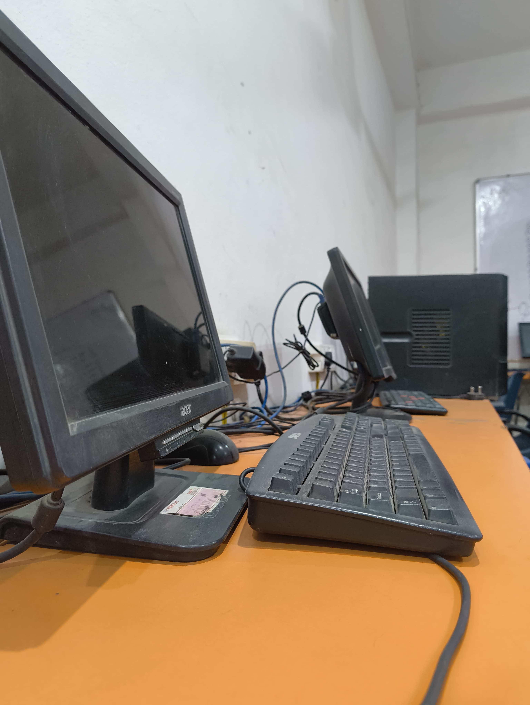
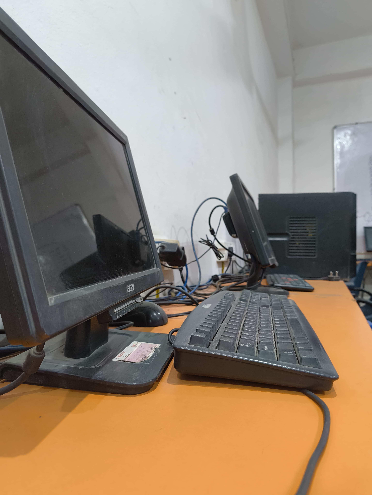

Computer Education
Master Technology with NIC Institute
Diploma in Computer Application (DCA)
Introduction to Windows
- Operating Systems Functions: The Shell and Its Classifications
- Basics of Windows
- Windows Features
- Windows User Interface Concepts
- The Desktop Items
- Windows Features That Are Unique to Windows
- File Management Using Windows
- Creating & Operating Files and Folders
- The Windows Explorer
- Navigational Tracks
- Windows on Internet
MS-Office Management
MS-Word
- Introduction to Word
- Exploring the Opening Screen
- Creating & Saving Documents
- Viewing Layouts
- Typing, Navigating Documents & Selecting Text
- Editing the Document
- Setting Up the Page
- Formatting the Paragraph with Ruler
- Customizing the Page
- Setting Spell Check Options
- Creating Tables
- Creating Mail Merge
- Creating Hyperlink
MS-Excel
- Introduction to MS-Excel
- Spreadsheet & Database Concept
- Opening & Saving Worksheets
- Executing Commands
- Entering Data in Series
- Manipulating Cell Contents
- Formatting Rows and Columns
- Protecting & Sharing Workbook
- Entering Formulas
- Formatting Cells
- Adding Graphics
- Preparing Charts
- Creating a Pivot Table
- Creating Macros
MS-PowerPoint
- Introduction to PowerPoint
- Types of Layouts
- Creating Presentation Using Auto Content Wizards
- Creating Presentation Based on Blank Presentation
- Creating Slides and Entering Text
- Giving Animation and Effect to Slides
- Duplicating Slides
- Adding Transitions and Builds
- Creating Self-Running Presentation
- Viewing Presentations on Web
Finance Management
- Accounting Introduction
- Tally Features and Introduction
- Tally Software Customization
- Data Migration Tools
- Working with Multilingual Features
- Company Creation in Tally
- Using Company Feature
- Working with Accounting Info Menu
- Working with Payroll Info Menu
- Working with Inventory Info Menu
- Voucher Entry
- TDS and TCS Accounting
- Service Tax
- Central Sales Tax
- Fringe Benefit Tax
- Excise Accounting
- VAT Accounting
- Payroll
- POS and Job Costing
Data Base Management System (DBMS)
- MS-Access, FoxPro, Data Entry, Live Projects
Programming Language
The Language C++
- Getting Acquainted with C++
- Data Types
- Operation and Programming Constructs
- Arrays, Pointers, and Functions
- Introduction to Arrays
- A Brief Discussion of Pointers
- Functions
- Classes and Objects
- Introduction to Classes and Objects
- Constructors and Destructors
- The Scope Operator
- Inheritance
- Introduction, Multiple Inheritance
- Polymorphism
- Overloading, Operator Overloading
- Dynamic Polymorphism
- Virtual Function, Abstract Classes
- File Handling
- Stream Manipulation, Binary Input and Output
- Random Access to a File
- Templates and Exceptions
- Templates
- Exceptions
Data Structure in C++
- Stack
- Single Linked List
- Double Linked List
- Binary Trees
DTP – Desktop Publishing
- Windows Basics
- Concepts of DTP
- Image Basics
- Image Processing
Adobe PageMaker
- Editing and Formatting Text
- Master Pages
- Working with Graphics Object
- Printing Graphics
- Managing and Printing Publication
Corel Draw
- Corel Draw Basics
- Drawing and Selecting
- Creating Symbols
- Working with Text
- Working with Image
- Scanning Image
- Page Layout and Background
Adobe Photoshop
- Photoshop Basics
- Working with Image
- Selection, Painting & Editing Tools
- Layers
- Filters
- Digital Image Processing
- Color Correction
- Image Mixing
Internet
Learn the essentials of navigating and utilizing the internet effectively.
Our Computer Labs
 
